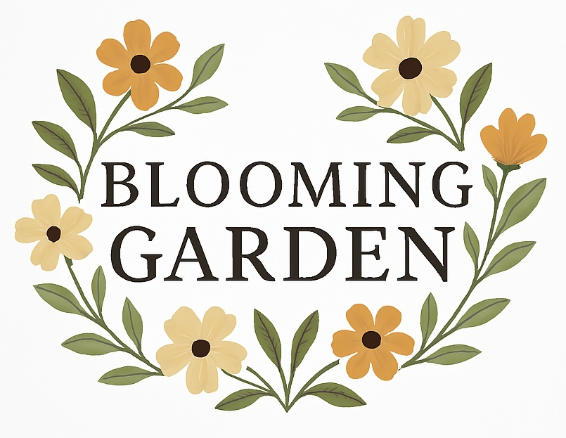
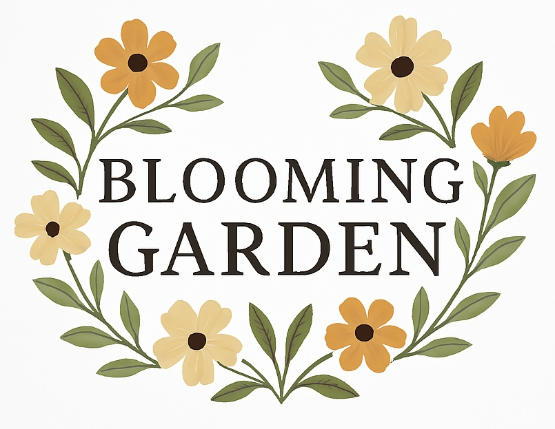

Our Projects
Gardening Tips
Explore the joy of cultivating a thriving garden—be it a colorful flower bed, a productive vegetable garden, or a lush orchard. Gardening is a rewarding escape where anyone can find peace and happiness.
Workshop and Education
At Blooming Garden, we believe it's never too late to learn. Our knowledgeable team is passionate about teaching how gardening can enhance well-being and support a more sustainable, eco-friendly lifestyle.
Environmental Awareness
Gardening offers more than beauty—it nurtures the planet. Recognizing its environmental benefits empowers us to grow with purpose and care for the Earth.

Health Benefits of Gardening
Gardening offers a wealth of health advantages. Learn how growing your own vegetables can boost your well-being, explore the best plants for every season, and uncover the unique health benefits of various vegetables.
About Blooming Garden
Our Community in Blooming Garden
At Blooming Garden, we’re a passionate community united by a love for gardening and its power to enrich our environment, health, and knowledge. We welcome anyone who:
- - Want to explore and master the art of gardening
- - Find peace and fulfillment in nurturing plants and enjoying the fruits of their efforts
- - Are committed to creating a positive impact on the environment
- - Have free time and are eager to embrace a rewarding, nature-inspired hobby
Contact Us
Contact us through: bloominggarden@work.
Call through: 123-456-7890
Fax is: 1-800-111-1111
Shipping by email to: Gardener's Supply Co. 128 Intervale Road Burlington, VT 05401